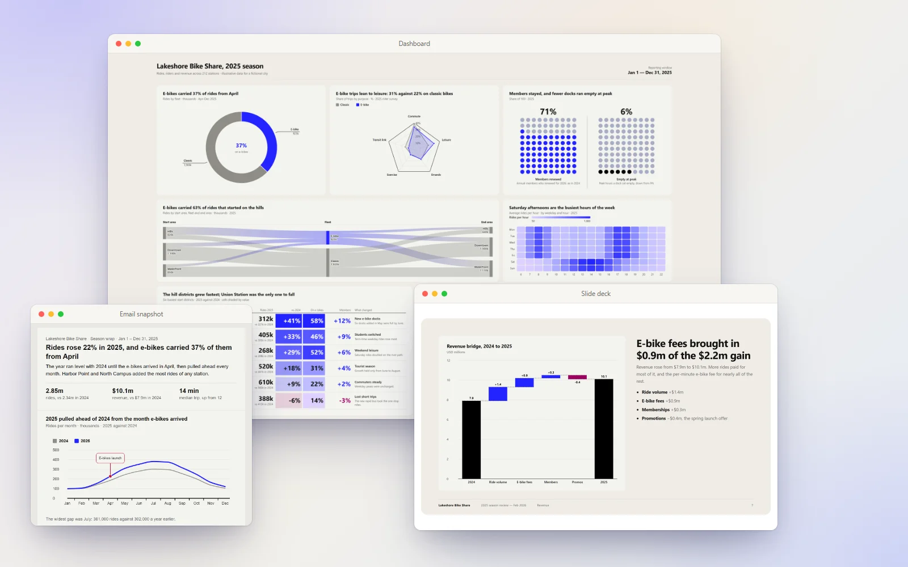
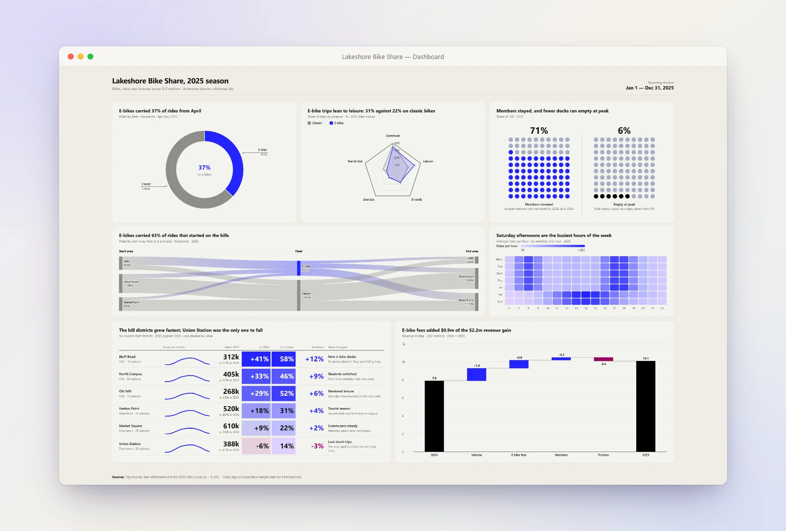
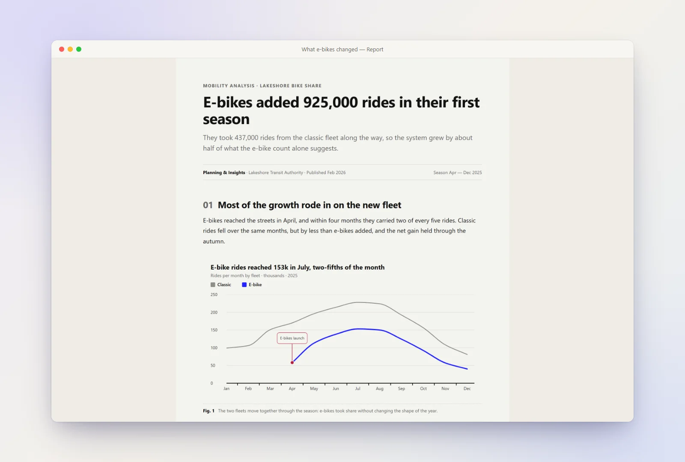
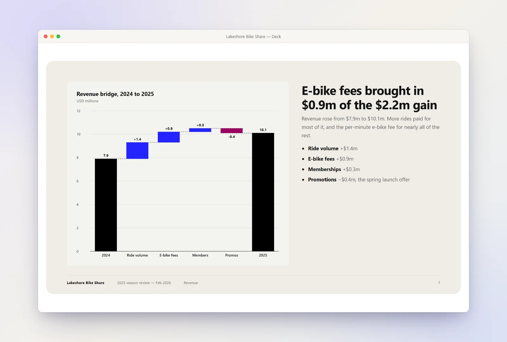
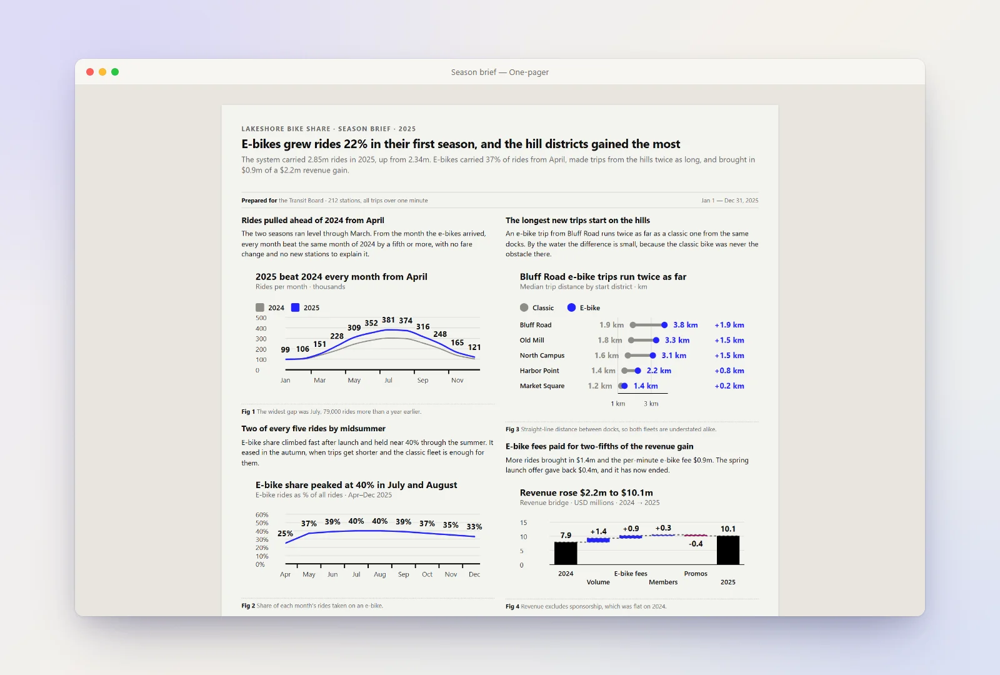
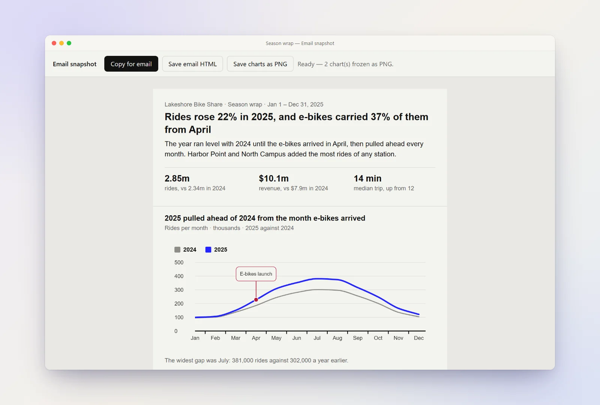
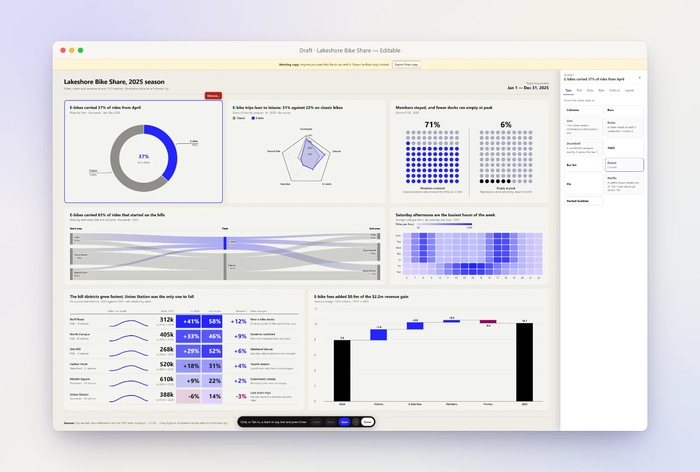

Turn any data into a dashboard, report, deck, one-pager or email snapshot
chart-dashboard is a free, open-source Claude Agent Skill that turns raw data into a finished HTML page in a single prompt. Hand Claude a table, a CSV, or a page of notes and get back one self-contained file with interactive SVG charts — no CDN, no build step, no API keys. Vendor-neutral: it also works with Gemini CLI, OpenAI Codex, GitHub Copilot and Cursor.

Six output formats
The skill picks the format from how you phrase the request. Every one is a single HTML file that opens offline. The images below come from one fictional bike-share season, built once in each format so you can compare how each handles the same data.
| Format | What it's for | Ask for it with |
|---|---|---|
| Dashboard | Monitoring: one panel per finding, no prose | (the default) “dashboard”, “analytics page”, “KPI view” |
| Report | An argument with evidence | “write up”, “retrospective”, “analysis” |
| Slide deck | An argument someone presents | “presentation”, “slides”, “deck” |
| One-pager | A report on one printed sheet | “print it”, “one page”, “a handout” |
| Email snapshot | One to three findings in an email body | “paste it into the weekly update”, “Outlook”, “Gmail” |
| Editable page | Any of the above but the one-pager, changed in the browser | “make it editable”, “so I can change the numbers” |
Dashboard
Monitoring, read at a deskA bento grid with one panel per finding and no prose. The grid comes from the shape of the analysis, so a wide panel goes only to a finding that leads, and each title states what its chart shows rather than naming the measure.
- “dashboard”
- “analytics page”
- “KPI view”
- the default

Finished examples: logistics-network-dashboard (a geofacet tile map, Sankey and waterfall in one standalone file) and q4-ecommerce (a 20-panel grid).
Report
An argument, read aloneNumbered sections of prose with figures and captions, set in a paper column. Each section makes a claim and its figure is the evidence; captions say what the figure means instead of repeating its title.
- “write up”
- “retrospective”
- “analysis”
- “for the board”

Finished example: ev-retrospective, a sector retrospective with an abstract, pull quotes and source notes.
Slide deck
An argument, presentedOne claim per 16:9 slide. The skill lays a fixed spine first — cover, agenda, a divider for each section, a closing ask — then picks one of eighteen layouts for each claim. A chart slide carries its reading beside the chart, not a one-line caption. Print it and it comes out one slide per sheet.
- “presentation”
- “slides”
- “deck for Thursday's board meeting”

Finished example: coffee-pricing-deck, a sixteen-slide decision deck.
One-pager
A report on one sheet of paperA report set in columns of headings, paragraphs, lists and small figures. It prints as exactly one page with nothing to change in the print dialog. Charts are sized to the column they sit in, so the page is packed rather than padded, and nothing is hover-only, because paper has no pointer.
- “print it”
- “one page”
- “a handout”
- “for the board pack”

Finished example: support-operations-brief.
Email snapshot
Findings that travel in an emailOne to three findings in a 600px block that survives being pasted into Gmail or Outlook. Mail clients delete SVG and strip style sheets, so every style is inline, the titles are text, and each chart is frozen into a PNG with alt text when the page opens. Click Copy for email and paste it into a new message.
- “paste it into the weekly update”
- “something I can drop into an email”
- “Outlook”
- “Gmail”

Finished example: logistics-network-email.
Editable page
Change it later without a rerunAsk for an editable page and the dashboard, report, deck or email snapshot
comes with an Edit page button. It opens an in-page editor: change text
and numbers, switch a chart's type, restyle colours, remove or move content,
then save. It ships as two files — <name>.html, the final
copy to share, and <name> (working copy).html, the editable
draft. A one-pager is never editable: an edit could lengthen a title on a page
with no scrollbar, and the sheet would crop it without warning.
- “make it editable”
- “so I can change the numbers”

Why it exists
Chart libraries render what you tell them to render. This skill decides what to render — the part that takes design judgment — and bundles a zero-dependency SVG renderer to draw it, so output stays consistent from the first page to the fiftieth.
| chart-dashboard | Chart.js / Plotly | BI tool screenshot | |
|---|---|---|---|
| Input | Plain-language data | Hand-written config | Manual building |
| Picks chart type for you | Yes | No | No |
| Runtime dependencies | None | npm / CDN | SaaS account |
| Works offline | Yes | Usually not | No |
| Output | One portable HTML file | Your app | PNG |
| Cost | Free, MIT | Free | Usually paid |
Four judgment calls it makes that a library can't:
- The layout comes from the analysis. One dominant trend opens differently from a head-to-head comparison, a ranking or six co-equal measures, and a wide hero panel goes only to a finding that actually leads.
- Titles state the finding. “Throughput fell 12% the week of the WMS cutover”, not “Weekly throughput by site” — held to quantified claims the chart proves, not adjectives and verdicts.
- The chart shows the finding. When a title names categories or a series, those take the accent and everything else is muted, so the picture agrees with the sentence above it.
- Measured, planned and projected look different. Forecasts are dashed or hatched rather than spending a colour, so a projection is never drawn in the same stroke as a measurement.
It also refuses the common mistakes: pie charts for time series, five lines on one axis, dual axes, truncated bar baselines and donuts with fifteen wedges.
Install
Claude Code — plugin (recommended)
/plugin marketplace add raghuramsirigiri/raghuram-skills
/plugin install chart-dashboard@raghuram-skillsClaude Code — manual
git clone https://github.com/raghuramsirigiri/raghuram-skills.git
cp -r raghuram-skills/plugins/chart-dashboard/skills/chart-dashboard ~/.claude/skills/To scope it to one project instead, copy it into .claude/skills/ in
that project's root.
claude.ai, Claude Desktop, and the API
cd raghuram-skills/plugins/chart-dashboard/skills && zip -r chart-dashboard.zip chart-dashboardThen upload it under Settings → Capabilities → Skills.
Gemini CLI, OpenAI Codex, GitHub Copilot, Cursor and other AI tools
Nothing in the skill is Claude-specific — it is Markdown instructions plus a dependency-free JavaScript library. Copy it into your project:
git clone https://github.com/raghuramsirigiri/raghuram-skills.git
cp -r raghuram-skills/plugins/chart-dashboard/skills/chart-dashboard ./.agent-skills/chart-dashboardThen add this block to whichever instruction file your tool reads at startup:
## Dashboards, reports, decks and one-pagers
When asked to build a dashboard, analytics page, data report, slide deck,
one-page printable brief or charts to paste into an email,
follow `.agent-skills/chart-dashboard/SKILL.md`.| Tool | Where that block goes |
|---|---|
| OpenAI Codex, Cursor, Zed, Aider, Jules, opencode | AGENTS.md |
| Gemini CLI, Gemini Code Assist | GEMINI.md |
| GitHub Copilot | .github/copilot-instructions.md |
| Windsurf | .windsurf/rules/chart-dashboard.md |
| Cline / Roo Code | .clinerules/chart-dashboard.md |
| Anything else | Paste SKILL.md into the system prompt |
The repository ships working AGENTS.md, GEMINI.md and
.github/copilot-instructions.md files to copy, plus an
.agents/skills.json manifest for agents that discover skills on
their own.
The rest of the marketplace
The raghuram-skills marketplace holds independent plugins, and
installing one never pulls in the others:
| Plugin | What it does |
|---|---|
chart-dashboard | This one. Data → a self-contained HTML dashboard, report, deck, one-pager or email snapshot. |
decisions-only | A meeting transcript → the decisions and commitments, and nothing else. |
whats-changed | This period's numbers against last period's → what moved, by how much, and the few lines that explain the total. |
sanity-check | One spreadsheet, deck or PDF → the mistakes that would embarrass you, ranked into what blocks sending. |
exec-brief | A long thread or document → one bottom-line sentence, at most three points, and one ask. |
Install any of them the same way: /plugin install <name>@raghuram-skills.
How to use it
Ask in plain language — the skill triggers on its own, no slash command needed.
- “Build me a dashboard from this — Q1 revenue 412k, Q2 438k, Q3 451k, Q4 602k.”
- “Here's our support CSV. Make an analytics page showing ticket volume and backlog.”
- “Write up a retrospective on our 2025 uptime with charts.”
- “Make a deck for Thursday's board meeting out of these pricing numbers.”
- “Give me a one-page brief I can print for the board pack.”
- “Something I can paste into this week's update email.”
It reads markdown tables, CSV, TSV, JSON, pasted spreadsheet cells and prose with numbers buried in it. Give it a topic with no numbers and it says so, labelling any figures as illustrative rather than passing invented data off as real measurements.
Chart types
Every chart is inline SVG with tooltips, hover highlighting and clickable legends, reachable from the keyboard. No canvas, no framework.
| Family | Variants |
|---|---|
| Line | line, spline, step, datetime axis, logarithmic axis, zoomable |
| Column & bar | grouped, stacked, 100% stacked, range, pyramid, 3D |
| Bar list | axis-free ranked bars, label above each bar, negative values |
| Dumbbell | two states per category, the gap between them drawn and stated |
| Histogram | counts, percentage and cumulative distributions |
| Waterfall | a bridge from one total to another through signed steps |
| Sankey | flows between stages, with unaccounted volume shown |
| Heatmap | a value per cell of two ordered dimensions; a calendar of one value per day |
| Radar | several measures per item on shared spokes |
| Donut & pie | donut, pie, semi-circle, variable radius, exploded slices |
| Waffle | dot-grid part-of-whole panels with a headline stat |
| Scatter & bubble | scatter with a regression line, bubble, packed bubble |
| Tables | formatted tables with sign or scale shading; report tables mixing text, insight, KPI and small-chart columns; bar insight tables with a sentence and a stat per row |
| Geofacet | one tile per region on a map-shaped grid — bar, heat or gauge tiles |
| Panels | several charts under one shared title, as one exhibit |
True geographic maps and treemaps are not supported yet.
Theming and brand colours
Point it at your stylesheet, a saved page or a single hex. Two bundled scripts
run the same OKLCH recipe — paper, a greyscale ink ramp, a seven-step series
ramp, and separate accent, annotation and counter roles, each checked for
contrast — and one Charts.applyPalette call re-skins every chart and
the page around it.
# Harvest a brand from its stylesheet or a saved page
node plugins/chart-dashboard/skills/chart-dashboard/scripts/extract-theme.js their-site.css
# Only have one hex? Same recipe, nothing observed
node plugins/chart-dashboard/skills/chart-dashboard/scripts/generate-theme.js '#2323FF'Colour is the only thing a brand changes. Type scale, spacing, stroke widths and legend position stay fixed, because those proportions are what make the chart types read as one family.
Finished examples
Real builds from the skill, committed in the repository. Download
any index.html and open it — no server, no network.
| Example | Format | What it shows |
|---|---|---|
| logistics-network-dashboard | Dashboard | A geofacet tile map by US state, a cost waterfall, a Sankey, a histogram, waffles, a dumbbell, a donut and a bar insight table |
| q4-ecommerce | Dashboard | A 20-panel grid with an annotated revenue trend, channel and device mix, funnel and cohort views |
| ev-retrospective | Report | Numbered sections, figures with interpretive captions, pull quotes and source notes |
| coffee-pricing-deck | Slide deck | Sixteen slides on the full spine, with split, full-bleed, compare, table, timeline, quote and stat layouts |
| support-operations-brief | One-pager | Two packed columns: four charts, six prose sections, a findings list and a method note |
| logistics-network-email | Email snapshot | A headline, three figures, two frozen charts and a plain email table |
Frequently asked questions
What are the dependencies?
None. The chart library — charts.js, theme.js, and
charts.css, about 760 KB unminified (about 210 KB gzipped) — is inlined
into the page, so you get one standalone HTML file. There is no npm install, no
CDN script tag, no build step, and no framework. Open the file in any browser
from the last decade and it renders.
Does it work offline?
Yes. The finished page makes no network requests at all — no CDN and no web font. It uses Inter when installed and falls back to Segoe UI or Helvetica, and the bundled checker fails any page that reaches for the network.
Is my data sent anywhere?
The generated HTML makes no network calls and contains no analytics or telemetry. Your data is embedded in the file itself and stays wherever you put the file. Claude itself processes your prompt normally — this skill adds no extra data flow.
Can I use chart-dashboard commercially?
Yes. MIT licensed, including client work and commercial products. Attribution is appreciated but not required.
Does it work in Claude Code, claude.ai, or both?
Both, plus Claude Desktop and the Claude API. The Agent Skills format is shared across all of them — see Install for the path matching your setup.
Does it work with Gemini, Codex, Copilot, or Cursor?
Yes. The skill is vendor-neutral — plain Markdown instructions plus a
dependency-free JavaScript library, with no Claude-specific tools or APIs
required. Copy the skill folder into your project and reference it from your
tool's instruction file: AGENTS.md for OpenAI Codex, Cursor, Zed
and Aider; GEMINI.md for Gemini CLI; or
.github/copilot-instructions.md for GitHub Copilot. The
repository ships all three as working examples.
Can I export it to PDF, PNG or PowerPoint?
PDF — yes, from the browser's own print dialog. A deck prints one rounded slide per page, at exactly 16:9; a one-pager prints as exactly one page; a dashboard or report prints as the page you see. PNG — screenshot the page, copy out an individual chart, which is plain inline SVG, or use the email snapshot's Save charts as PNG. PowerPoint — no; the output is HTML by design, which is what keeps it one dependency-free file that renders identically everywhere.
How is this different from asking Claude for a chart directly?
Without the skill, Claude reaches for whatever library it guesses at, output quality swings between prompts, and pages often break offline because of CDN script tags. The skill fixes the renderer, carries a chart-selection table so the chart type matches the data shape, and enforces layout rules — so the tenth dashboard looks like the first.
How many panels should a dashboard have?
As many as there are findings. The skill puts one panel per question the data answers rather than filling a fixed grid — four numbers get a small page, twenty measures get a long one. Padding a dashboard with filler charts is the failure it is written to avoid.
Do all the dashboards come out looking the same?
They shouldn't. The layout is derived from the shape of the analysis — one dominant trend opens differently from a head-to-head comparison, a ranking, or six co-equal measures — and the templates ship without a starter grid so no single arrangement gets copied onto every page. What stays constant is the design system: type scale, spacing, legend position and stroke weights.
Can the page have filters?
Yes, and they are wired end to end: the dataset is filtered rather than the label swapped, every dependent panel and KPI redraws, and any title stating a finding is recomputed from the filtered rows. All or nothing — a half-wired dropdown discredits the numbers that are correct.
Built by
Raghuram Sirigiri — issues and pull requests welcome on GitHub. If the skill saved you time, a star helps other people find it.